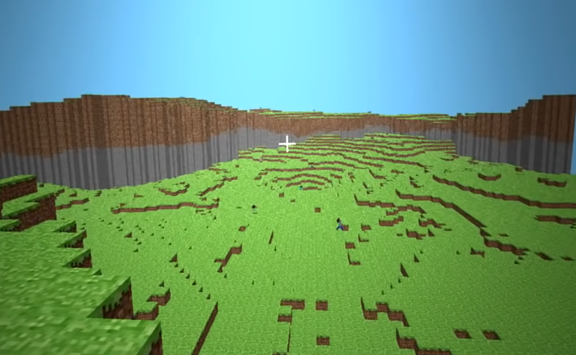

Игра вновь переименована и теперь называется просто -
Minecraft
Днём Нотч выпускает rd-161348 в которой был добавлен сажанец, однако дерево пока вырасти не могло. Была изменена текстура досок, а в файлах игры можно найти текстуры лавы и воды.
Обновление получил генератор мира, теперь в Майнкрафте можно найти скалы, хотя они и были слишком резкими.
Между 16-17 часами Нотч выпускает 4 новых версии, которые обычно называют "Minecraft pre-classic alpha".
- rd-161607
- rd-161616
- rd-161625
- rd-161648
Эта линия версий предназначалась для закрытого тестирования и была выслана лишь нескольким, самым активным игрокам.
Точно сказать, что дабавили в этих версиях сложно, так как все они были утеряны, а упоминания о них в интернете почти нет. Если верить Minecraft Wiki, ничего кроме баг-фиксов и технических изменений там не было.